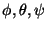
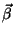

| PyHEP Tutorial |
A hep.lorentz.Transformation object represents a general Lorentz transformation. It can be used to transform either a geometric object, such as a four-vector, or a reference frame.
Typically, a transformation is specified as a rotation or a boost. A rotation is specified by the Euler angles  in a particular reference frame. A boost is specified by the vector  in a particular reference frame. The frame object's Rotation and Boost methods, respectively, create these transformations. For example,
from hep.lorentz import lab from math import pi rotation = lab.Rotation(pi / 4, pi / 4, 0) boost = lab.Boost(0.0, 0.0, 0.5)
Transformations may be composed using the operation. Be careful about the frame in which you specify each one; generally, for sequential transformations, you will want to apply the previous transformation to your starting frame of reference before specifying the next one.
You can apply a transformation to a four-vector using the ^
operator; this returns a different geometric four-vector.
FIXME
A transformation can also be used to create a new reference frame.
alex@alexsamuel.net